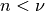
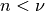

gptools: Gaussian process regression with support for arbitrary derivatives¶
Overview¶
gptools is a Python package that provides a convenient, powerful and extensible implementation of Gaussian process regression (GPR). Central to gptool‘s implementation is support for derivatives and their variances. A number of kernels are provided to allow many types of data to be fit:
- DiagonalNoiseKernel implements homoscedastic noise. The noise is tied to a specific derivative order. This allows you to, for instance, have noise on your observations but have noiseless derivative constraints, or to have different noise levels for observations and derivatives. Note that you can also specify potentially heteroscedastic noise explicitly when adding data to the process.
- SquaredExponentialKernel implements the SE kernel which is infinitely differentiable.
- MaternKernel implements the entire Matern class of covariance functions, which are characterized by a hyperparameter
 . A process having the Matern kernel is only mean-square differentiable for derivative order .
. A process having the Matern kernel is only mean-square differentiable for derivative order . - RationalQuadraticKernel implements the rational quadratic kernel, which is a scale mixture over SE kernels.
In all cases, these kernels have been constructed in a way to allow inputs of arbitrary dimension. Each dimension has a length scale hyperparameter that can be separately optimized over or held fixed. Arbitrary derivatives with respect to each dimension can be taken, including computation of the covariance for those observations.
Other kernels can be implemented by extending the Kernel class. Furthermore, kernels may be added or multiplied together to yield a new, valid kernel.